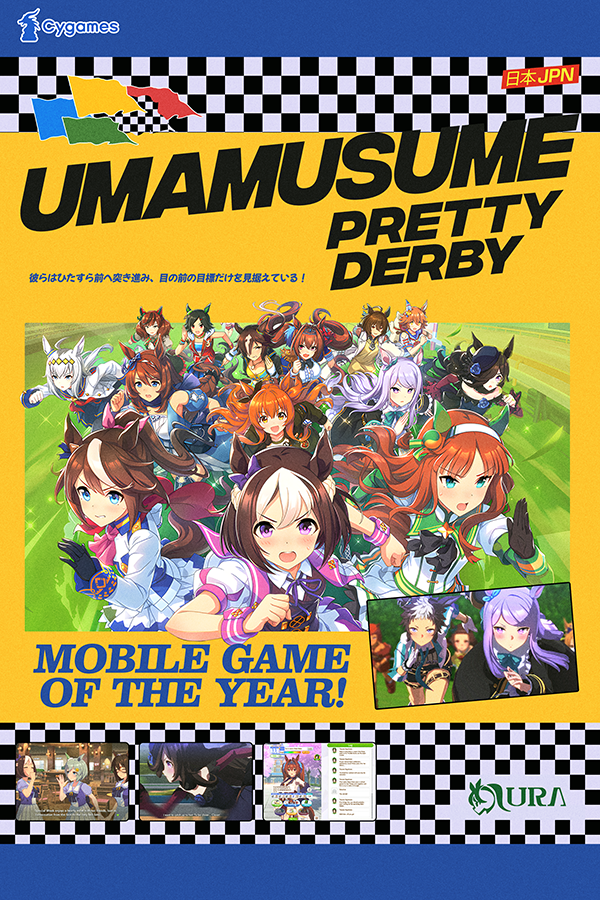

Umamusume: Pretty Derby
Every archived year-end list appearance, including placement and points earned.
About the Game
-- Umamusume. They are born to run. They inherit otherworldly names, and are inspirited by dreams most dramatic and wonderful. Now, they run ever forward. That, is their destiny. No one knows how the races that lie in their futures will end. Even so, they continue to run, aiming only toward the goal in front of them.-- Each and every one of the runners sports a unique charm. It's up to you, the trainer, to lead them down the path of victory! You have but one goal—raise your Umamusume to her fullest potential and help turn her greatest dreams into reality. In order to reach these newfound heights, it's your job to participate in—and win—as many races as possible! Triumph awaits those who train hard and work to communicate. Only by cooperating will you take the crown!-- Experience the thrilling stories of historic racers, such as:Special Week (Voice: Azumi Waki)Silence Suzuka (Voice: Marika Kono)Tokai Teio (Voice: Machico)Oguri Cap (Voice: Tomoyo Takayanagi)Gold Ship (Voice: Hitomi Ueda)Vodka (Voice: Ayaka Ohashi)Daiwa Scarlet (Voice: Chisa Kimura)Mejiro McQueen (Voice: Saori Onishi)Symboli Rudolf (Voice: Azusa Tadokoro)Rice Shower (Voice: Manaka Iwami)Haru Urara (Voice: Yukina Shuto)Nice Nature (Voice: Kaori Maeda)...and so many more—over 20 Umamusume are searching for a trainer to help them achieve their goals!-- Cheer for your favorite Umamusume and immerse yourself in exhilarating races and stunning performances in breathtaking 3D graphics. Up to 18 Umamusume compete in races against each other for first place—watch them go as you tune in to the game's incredibly realistic live commentary. And of course, stick around after the race to support the victor during a dazzling winning concert! Whether on the racetrack or the stage, raise the roof to each exciting new performance!
| Developer | Cygames |
|---|---|
| Publisher | Cygames |
| Genres | Simulation, Sports |
| Platforms | PC |
SingleplayerSteam AchievementsMultiplayerFull controller supportFunnyFree to PlayPvPAnimeIn-App PurchasesCute3DRoguelike
Where to Buy
Game information provided by RAWG.
Points by Year
List History
| Year | Source | List | Placement | Points |
|---|---|---|---|---|
| 2025 | Dexerto | The 20 best games of 2025 | 20 | 3 |
| 2025 | Geeky Brummie | Top 50 Most Notable Games of 2025 | 28 | 1 |
| 2025 | Polygon | The 50 best games of 2025, as chosen by Polygon | 18 | 3 |